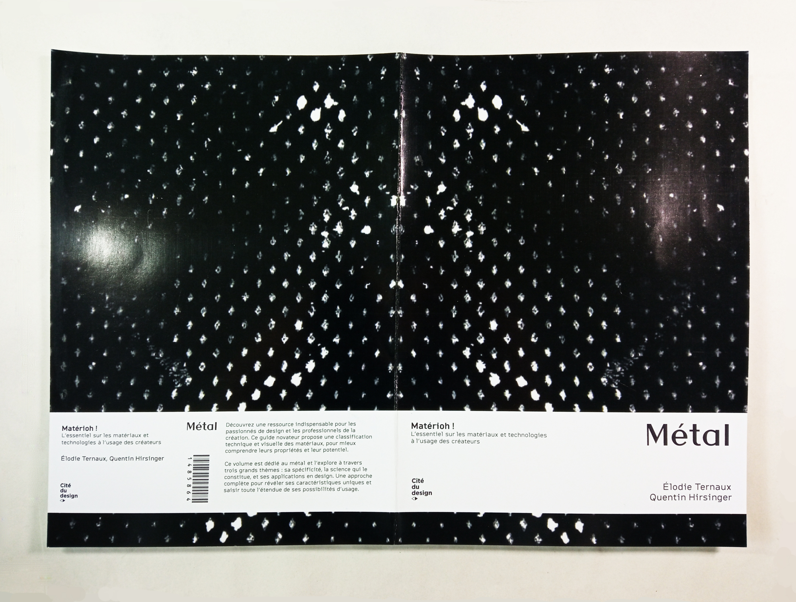
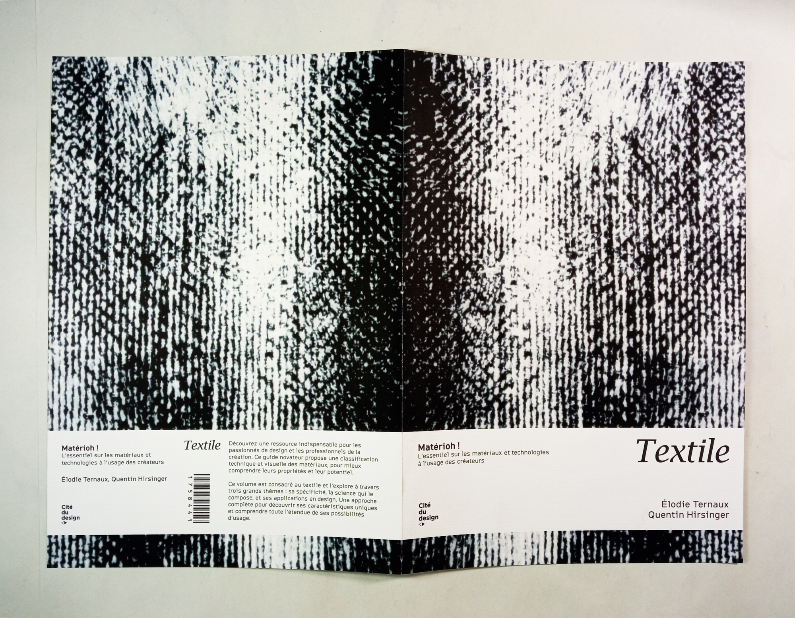
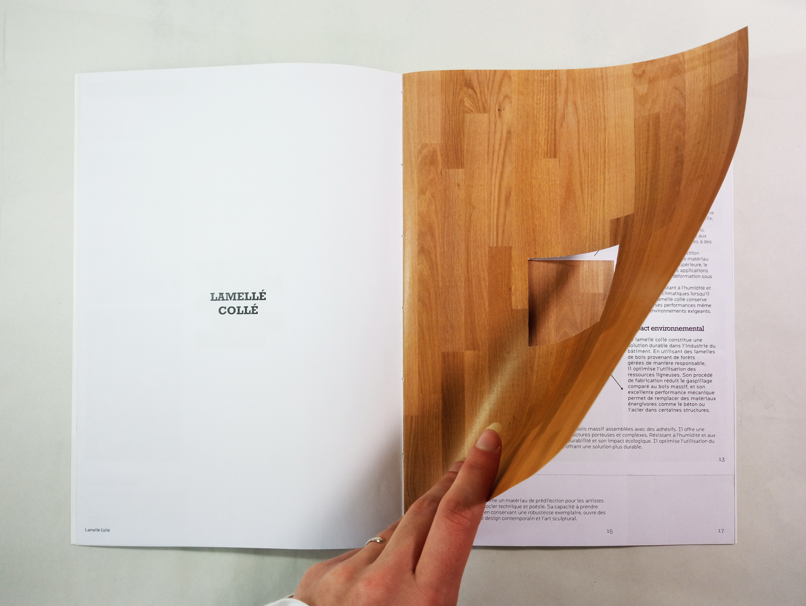
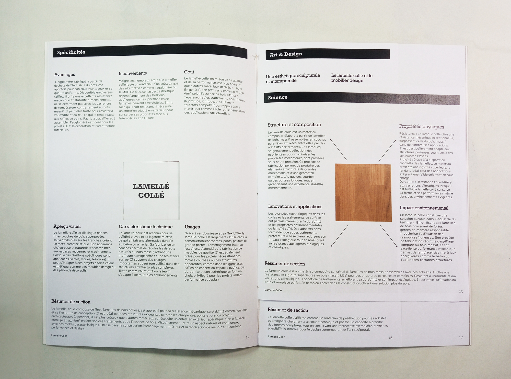
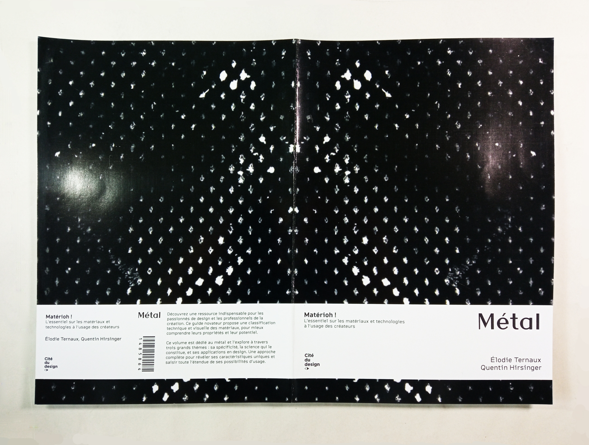
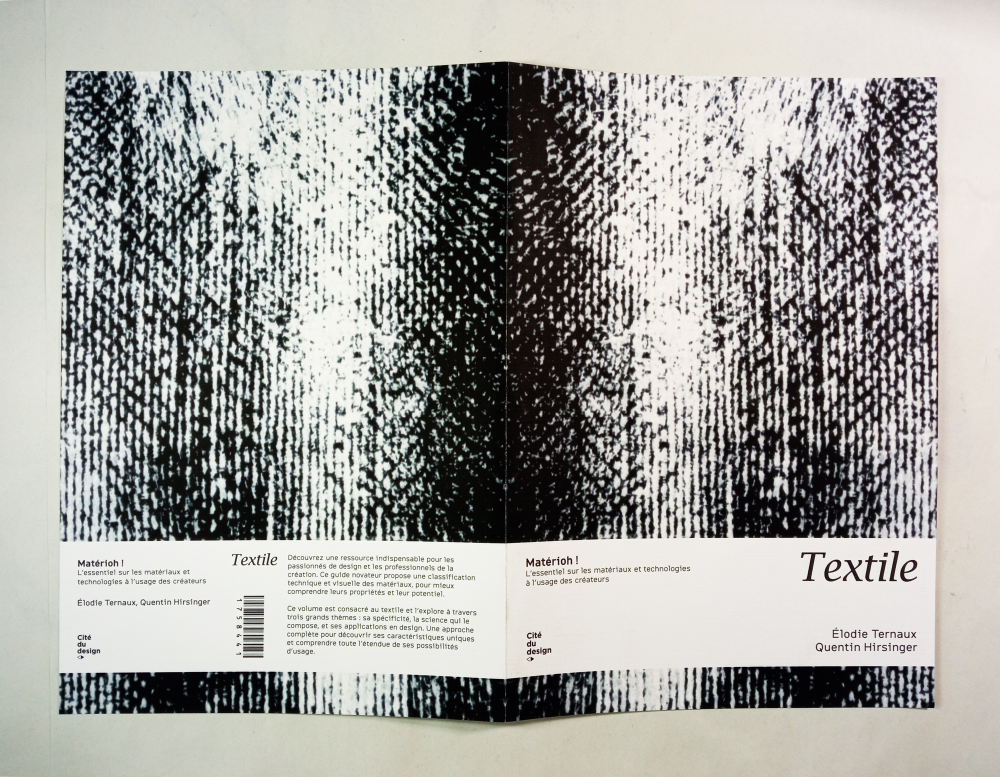
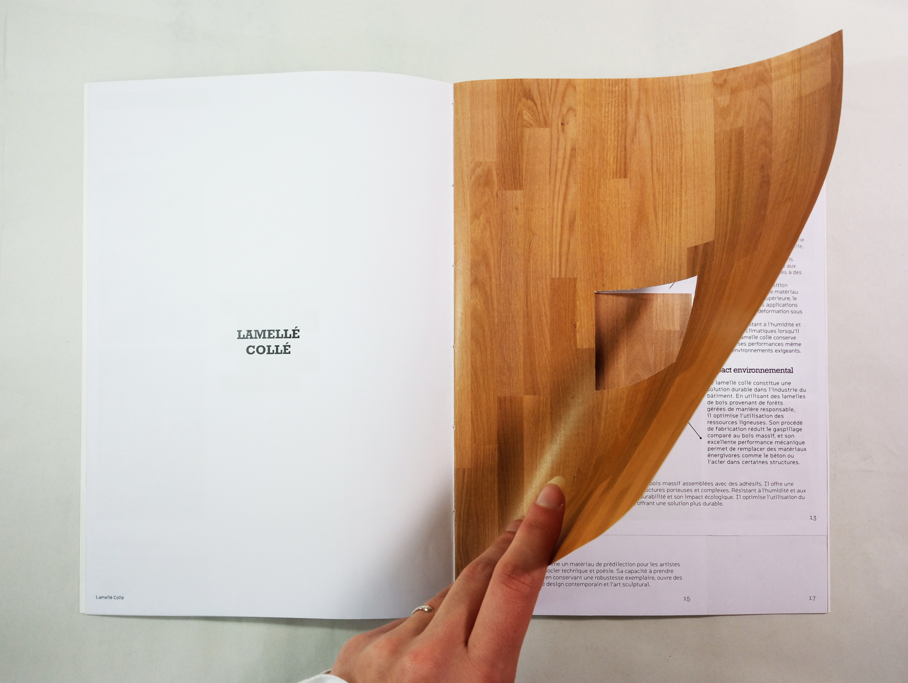
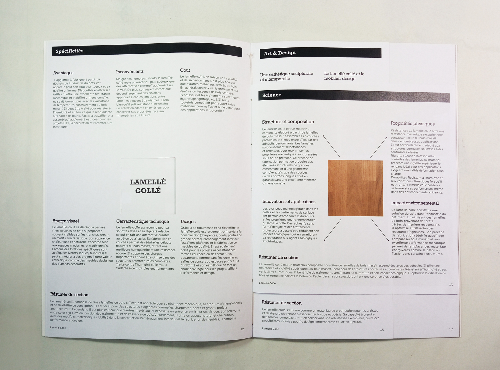

Mission :
La mission consiste à concevoir la ligne graphique de la collection d’ouvrages en définissant une ligne visuelle cohérente : principe de couverture, maquette intérieure et iconographie
Problème à résoudre / objectif de com’ :
Cette identité devra refléter la vocation pédagogique et inspirante de la collection, tout en mettant en avant les liens entre design, transformation des matériaux et techniques de production.
Réalisation :
L’identité graphique de la collection traduit visuellement la nature des matériaux à travers des choix typographiques, visuels et matériels cohérents. Rockwell incarne la robustesse du bois, Athena la précision du métal et Lucida Bright la souplesse du textile, tandis que Citrine Variable assure une lecture fluide et technique.
La couverture met en scène une trace d’encre en négatif, exprimant l’authenticité brute du matériau par un contraste noir et blanc percutant. Reprise en quatrième de couverture, cette esthétique souligne la nature didactique et non linéaire des ouvrages. Un bandeau inspiré des revues scientifiques apporte une touche de rigueur et met en avant des informations clés. Cette continuité visuelle renforce l’idée que chaque livre incarne le matériau qu’il explore.
L’intérieur joue sur des formats variés pour structurer l’information de manière didactique et illustrer la transformation des matériaux, avec, par exemple, des formats carrés dédiés aux aspects scientifiques.
Enfin, le choix du papier enrichit l’expérience sensorielle : gaufré pour évoquer la texture du bois et du textile, brillant pour rappeler l’éclat du métal. L’ensemble crée une collection cohérente et immersive, où chaque ouvrage incarne pleinement le matériau exploré.
 






